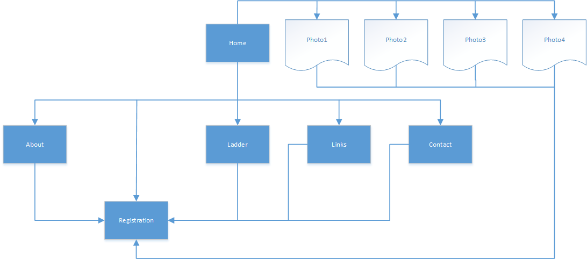

Name: Adam Nicholls
Login: jc298482
Raise community awareness for the business, drive signups of new clientel, with a focus on targeting the younger demographic while reinforcing the social and physical benefits of volleyball and establishing an online community where members can share information about games and other volleyball related social events
The success of the site should evaluated by its ability to enthuse website visitors into taking action in signing up to join the volleyball club. This will be measurable in that signups that occur through the website will be recorded in a database. Also the level of activity around the Diggers facebook page should should serve as an indicator of the success of the websites community aspect.
The target audience for the website is
